敵側の天井と16面の修正
前回レビュー版からの11面。両側とも実ゲーム描画。
変更理由・検証・寸法 · 19面の全体比較
3面
入口の低い張り出しを保ち、奥の空間を広げた。歩いて前へ出ると低い角度で狙える。
前回レビュー版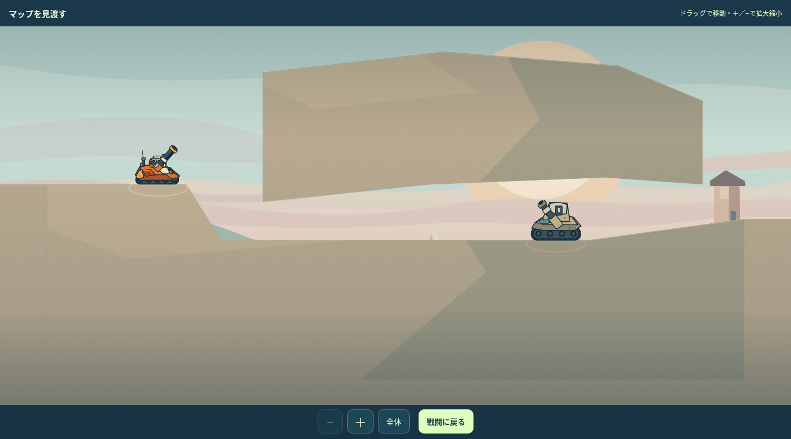
今回の修正後
4面
岬の上の岩を下面から削った。裏岸へ転移する経路を保持。
前回レビュー版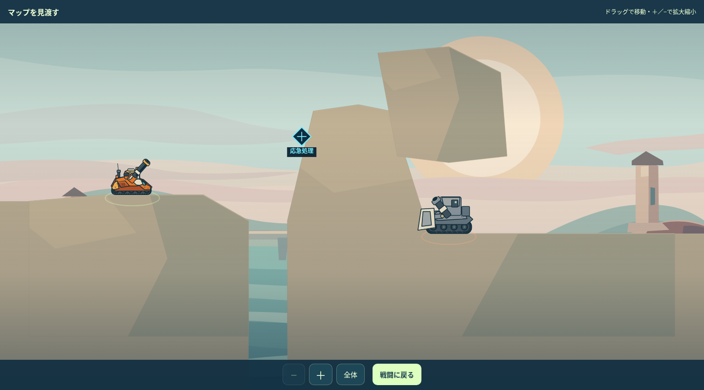
今回の修正後
7面
岩門の一片を壊す入口は保持し、奥の天井を削った。
前回レビュー版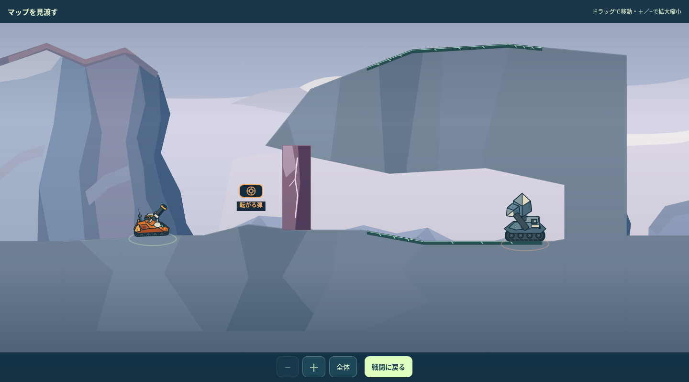
今回の修正後
8面
敵側の屋根を削り、反射面を前方の斜めの下面へ絞った。一回返して下へ送る。
前回レビュー版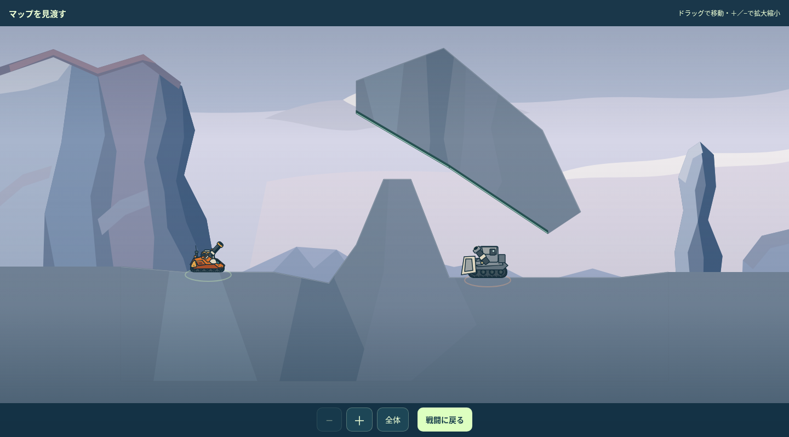
今回の修正後
16面
敵側の天井を広げ、岩肩を追加。低所から曲射するか、中腹へ転移して低く撃つかを選ぶ。
前回レビュー版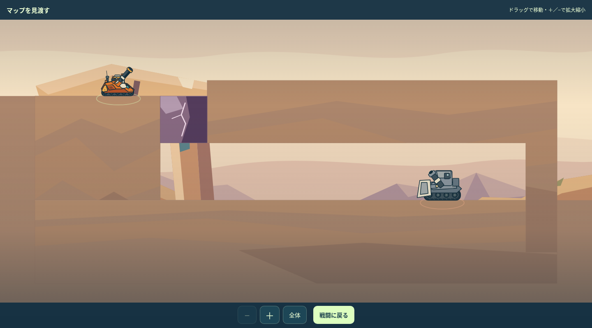
今回の修正後
18面
入口の梁高を保ち、奥の下面を持ち上げた。登って前へ出る射点を保持。
前回レビュー版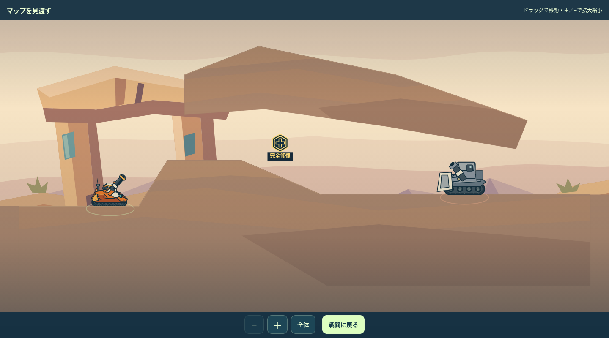
今回の修正後
19面
敵側の岩を上へ移し、高い中継棚から狙う経路を保持。
前回レビュー版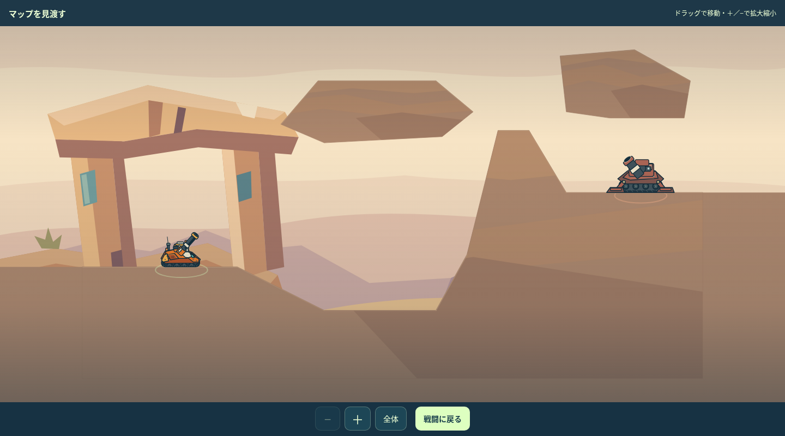
今回の修正後
23面
雲の出口側の張り出しを保ち、敵側の下面を削った。雲を通す入力は維持。
前回レビュー版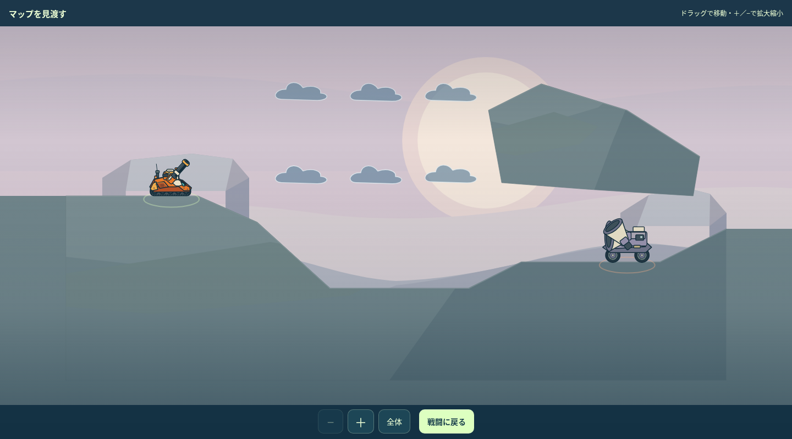
今回の修正後
26面
右の庇だけ上へ移し、下の鏡棚への入射と反射後の出口を保持。
前回レビュー版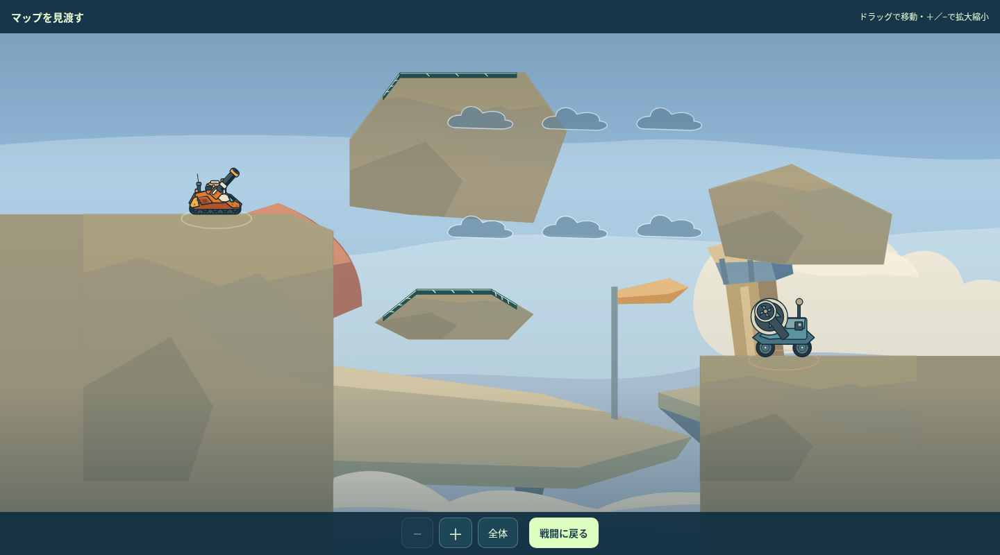
今回の修正後
27面
格納庫の庇を上へ移した。雲を通す射撃と、歩いて雲を抜けた射撃を選べる。
前回レビュー版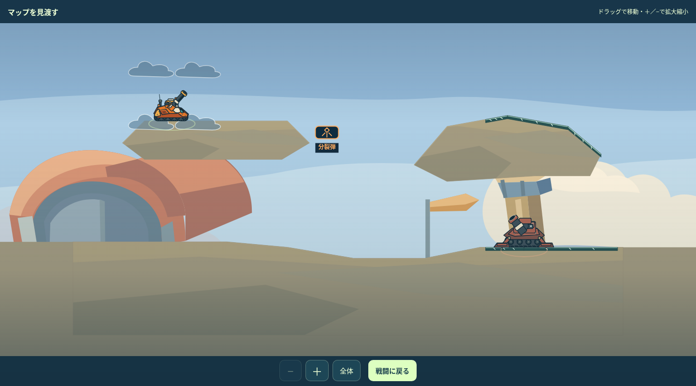
今回の修正後
29面
敵側の庇を上へ移した。中継デッキの手前に遮蔽を設け、遠側へ転移して同高度から狙う利点を残した。
前回レビュー版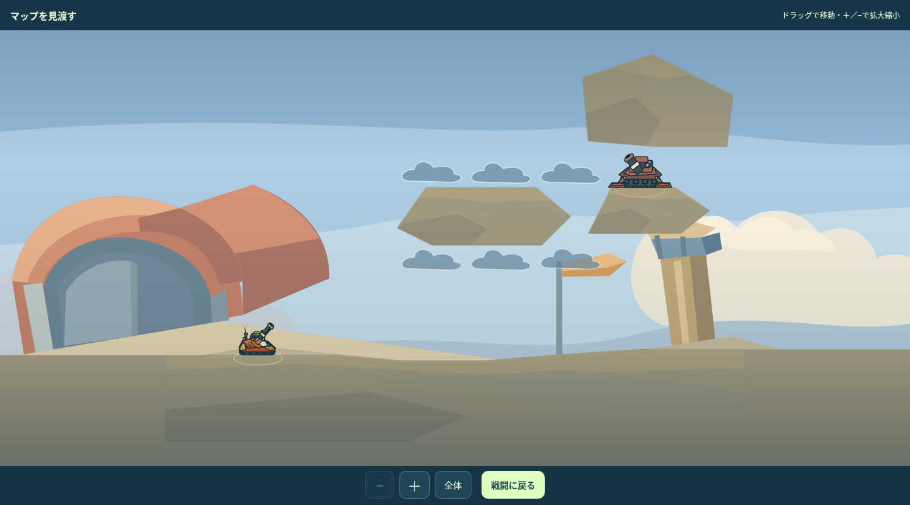
今回の修正後
16面：降りた後の選択
低所から岩肩越しに曲射するか、もう一手と反撃を受けて中腹へ転移するか。両方を実戦で完走。
低所から曲射した後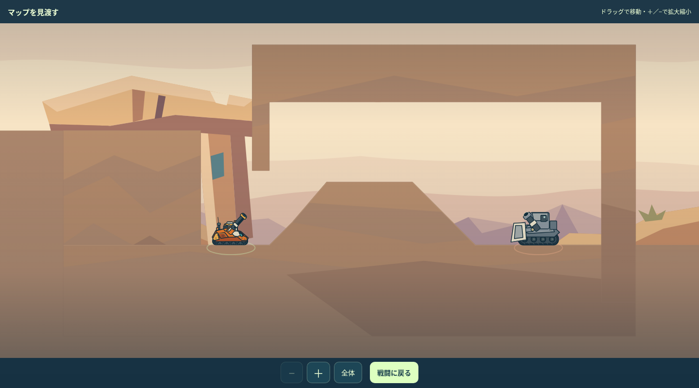
中腹へ転移して撃った後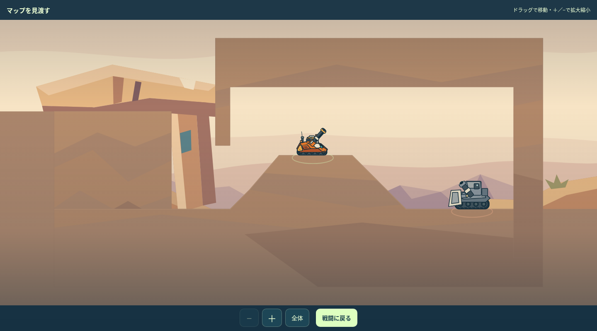